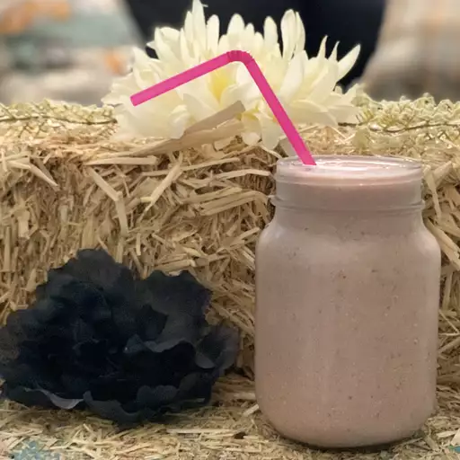

Strawberry and Oatmeal Breakfast Smoothie

Description
This smoothie is a great way to start the day. As a breakfast smoothie,
oats are preferred, you can also add other fruits as well! I recommend either blueberries or
a banana as an alternative. Might as well mix some of them up as well if you'd like.
Ingredients
- 1 cup soy milk
- 1/2 cup rolled oats
- 14 frozen strawberries
- 1 banana, broken into chunks
- 1 1/2 teaspoons white sugar (Optional)
- 1/2 teaspoon vanilla extract (Optional)
Directions
- Gather ingredients.
- Blend soy milk, oats, strawberries, and banana in a blender until smooth.
- Add sugar and vanilla and blend again until smooth. (If added)
- Pour into glasses and serve.
Homepage